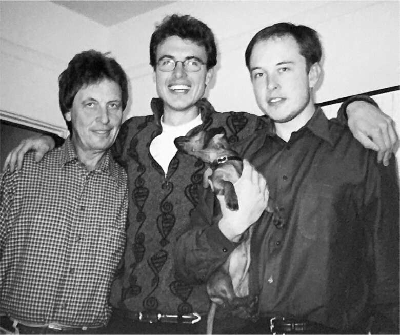

Bé Nevada
Vào tháng 5 năm 2002, đúng lúc Elon đang thành lập SpaceX, Justine sinh đứa con đầu lòng, một bé trai, đặt tên là Nevada vì cậu bé được thụ thai tại lễ hội Burning Man hàng năm được tổ chức tại bang đó. Khi Nevada được mười tuần tuổi, cả gia đình đến Laguna Beach, phía nam Los Angeles, để dự đám cưới của một người anh em họ. Trong buổi tiệc, một quản lý khách sạn đến tìm gia đình Musk. Anh ta nói đã có chuyện xảy ra với con của họ.
Khi họ trở về phòng, các nhân viên y tế đang đặt nội khí quản cho Nevada và cho cậu bé thở oxy. Người giữ trẻ giải thích rằng cậu bé đang ngủ trong nôi, nằm ngửa, và đến một lúc nào đó đã ngừng thở. Nguyên nhân có thể là Hội chứng đột tử ở trẻ sơ sinh, một căn bệnh không rõ nguyên nhân, là nguyên nhân hàng đầu gây tử vong ở trẻ sơ sinh tại các nước phát triển. "Vào thời điểm các nhân viên y tế hồi sức cho con, não của nó đã bị thiếu oxy quá lâu", Justine sau đó nói.
Kimbal đi cùng Elon, Justine và đứa bé đến bệnh viện. Mặc dù đã được tuyên bố chết não, Nevada vẫn được duy trì sự sống trong ba ngày. Khi cuối cùng họ quyết định tắt máy thở, Elon cảm nhận được nhịp tim cuối cùng của con và Justine ôm con trong vòng tay, cảm nhận được hơi thở cuối cùng của con. Musk khóc nức nở không kiểm soát. "Nó khóc như sóa", mẹ anh nói. "Khóc như sóa."
Vì Elon nói anh không chịu nổi việc về nhà, Kimbal đã sắp xếp cho họ ở tại khách sạn Beverly Wilshire. Quản lý đã dành cho họ phòng tổng thống. Elon yêu cầu dọn dẹp quần áo và đồ chơi của Nevada, những thứ đã được mang đến khách sạn. Phải ba tuần sau Musk mới dám về nhà và nhìn căn phòng từng là của con trai mình.
Musk âm thầm chịu đựng nỗi đau. Navaid Farooq, bạn anh từ Đại học Queen, đã bay đến Los Angeles và ở bên cạnh anh ngay sau khi anh về nhà. "Justine và tôi đã cố gắng nói chuyện với anh ấy về những gì đã xảy ra, nhưng anh ấy không muốn nói về điều đó", Farooq chia sẻ. Thay vào đó, họ xem phim và chơi trò chơi điện tử. Có lúc, sau một khoảng lặng dài, Farooq hỏi: "Cậu cảm thấy thế nào? Cậu đang đối mặt với chuyện này ra sao?". Musk hoàn toàn khép mình lại. "Tôi biết anh ấy đủ lâu để hiểu nét mặt anh ấy", Farooq nói. "Tôi có thể thấy anh ấy quyết tâm không nói về chuyện này."
Ngược lại, Justine rất c openness về cảm xúc của mình. "Anh ấy không thoải mái khi tôi thể hiện cảm xúc của mình về cái chết của Nevada", cô nói. "Anh ấy nói tôi đang thao túng cảm xúc, phơi bày trái tim mình ra ngoài." Cô cho rằng sự kìm nén cảm xúc của anh bắt nguồn từ cơ chế phòng vệ mà anh đã hình thành từ thời thơ ấu. "Anh ấy khóa chặt cảm xúc khi ở trong những giai đoạn tăm tối", cô nói. "Tôi nghĩ đó là cách anh ấy sinh tồn."
Khi Nevada chào đời, Elon đã mời cha mình bay từ Nam Phi đến thăm cháu trai. Điều này cho Elon cơ hội, mười ba năm sau khi rời Nam Phi, để làm lành với Errol, hoặc ít nhất là để giải tỏa một số tâm sự. "Elon là con trai đầu của bố, và có lẽ anh ấy có điều gì đó muốn chứng minh cho ông ấy thấy", Kimbal nói.
Errol mang theo người vợ mới, hai đứa con nhỏ của họ, và ba đứa con của vợ từ cuộc hôn nhân trước. Elon đã trả tiền cho cả bảy vé máy bay. Khi họ đến Raleigh, Bắc Carolina, sau chặng đầu tiên của chuyến bay từ Johannesburg, Errol được một đại diện của hãng hàng không Delta gọi đến. "Chúng tôi có một tin buồn", người đại diện nói. "Con trai ông muốn chúng tôi báo cho ông biết rằng Nevada, cháu trai của ông, đã qua đời." Elon muốn nhân viên hàng không báo tin vì anh không thể tự mình nói ra những lời đó.
Khi Errol nghe máy, Kimbal giải thích tình hình và nói: "Bố, bố không nên đến nữa." Anh cố gắng thuyết phục bố quay trở lại Nam Phi. Errol từ chối. "Không, chúng tôi đã ở Mỹ rồi, vì vậy chúng tôi sẽ đến Los Angeles."
Errol nhớ mình đã kinh ngạc trước kích thước của căn penthouse tại Beverly Wilshire, "có lẽ là thứ tuyệt vời nhất mà tôi từng thấy." Elon dường như đang ở trong trạng thái vô hồn, nhưng anh cũng rất cần sự quan tâm, theo một cách phức tạp. Anh không thoải mái khi để người cha ồn ào của mình nhìn thấy mình trong tình trạng dễ bị tổn thương như vậy, nhưng anh cũng không muốn ông rời đi. Cuối cùng, anh đã thúc giục cha và gia đình mới của ông ở lại Los Angeles. "Con không muốn bố quay về", anh nói. "Con sẽ mua cho bố một căn nhà ở đây."
Kimbal kinh hãi. "Không, không, không, đây là một ý kiến tồi", anh nói với Elon. "Em quên rằng ông ấy là một người tăm tối. Đừng làm thế, đừng làm điều này với chính mình." Nhưng anh càng cố gắng khuyên can em trai, Elon càng trở nên buồn bã. Nhiều năm sau, Kimbal vẫn trăn trở về những khao khát nào đã thúc đẩy em trai mình. "Chứng kiến con trai mình qua đời, tôi nghĩ rằng đó là điều khiến anh ấy muốn cha mình ở gần bên", anh nói với tôi.
Elon mua cho Errol và gia đình một căn nhà ở Malibu, cùng chiếc Land Rover lớn nhất mà anh tìm được, đồng thời sắp xếp cho các con của Errol được học tại những trường tốt và có xe đưa đón mỗi ngày. Nhưng mọi chuyện nhanh chóng trở nên kỳ lạ. Elon bắt đầu lo lắng khi Errol, lúc đó năm mươi sáu tuổi, có những biểu hiện quan tâm thái quá đến Jana, con gái riêng của vợ, khi đó mới mười lăm tuổi.
Elon rất tức giận với cha mình vì những hành vi không đúng mực, và anh cũng nảy sinh sự đồng cảm sâu sắc — cùng cảm giác gần gũi, sẻ chia — với những đứa con riêng của Errol. Anh hiểu rõ cuộc sống của chúng. Vì vậy, anh đề nghị mua cho Errol một chiếc du thuyền neo đậu cách Malibu bốn mươi lăm phút. Nếu Errol đồng ý sống một mình trên đó, ông có thể gặp gia đình vào cuối tuần. Đó không chỉ là một ý tưởng kỳ quặc mà còn là một ý tưởng tồi. Nó khiến mọi chuyện càng thêm khó xử. Vợ của Errol, kém ông mười chín tuổi, bắt đầu trông cậy vào Elon. "Bà ấy xem Elon là trụ cột gia đình chứ không phải tôi," Errol nói, "và vì thế, mọi chuyện trở nên phức tạp."
Một ngày nọ, khi Errol đang ở trên thuyền, ông nhận được tin nhắn từ Elon. "Tình hình này không ổn", Elon nói, và anh yêu cầu Errol quay về Nam Phi. Errol đã làm theo. Vài tháng sau, vợ và gia đình ông cũng trở về. "Tôi đã thử dùng mọi cách, từ đe dọa, thưởng phạt đến tranh luận để cha tôi thay đổi," Elon sau này kể lại. "Và ông ấy—" Musk im lặng một lúc lâu. "Vô ích, mọi chuyện chỉ trở nên tồi tệ hơn." Các mối quan hệ cá nhân phức tạp hơn nhiều so với các mạng lưới kỹ thuật số.

Errol, Kimbal và Elon